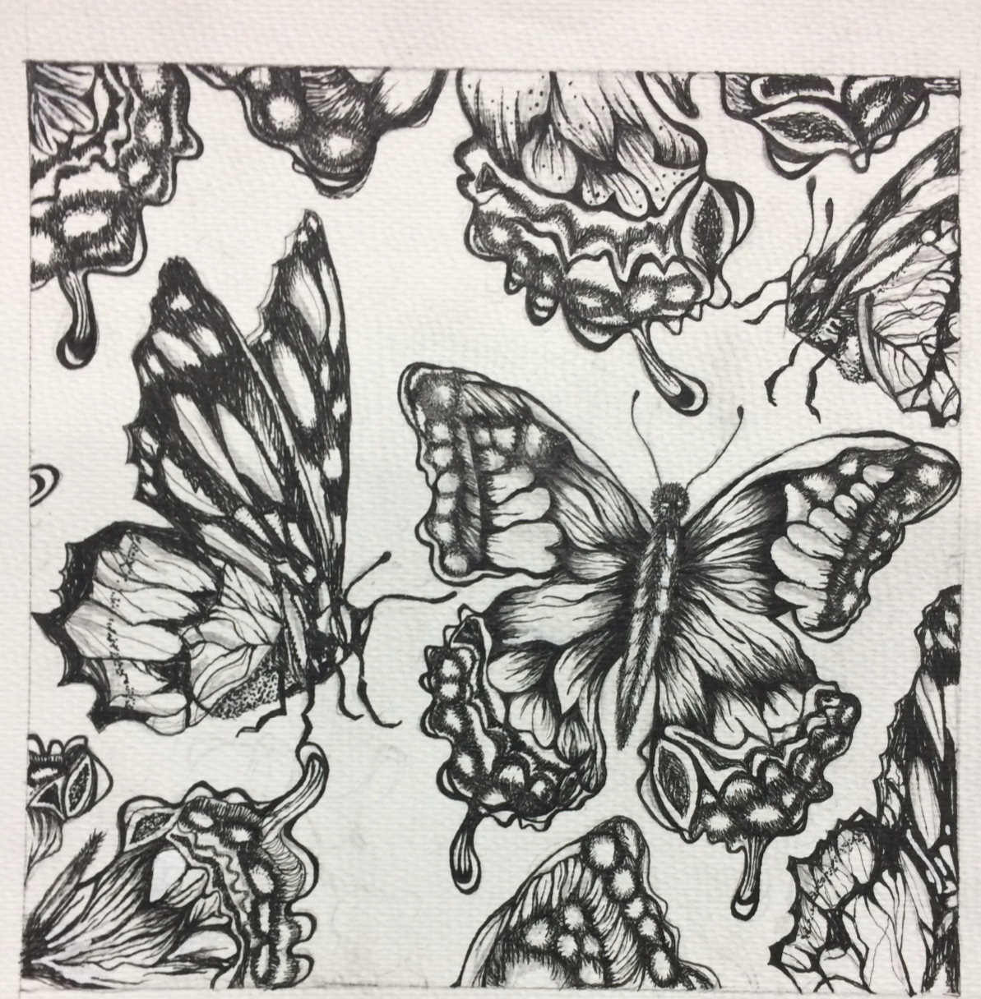
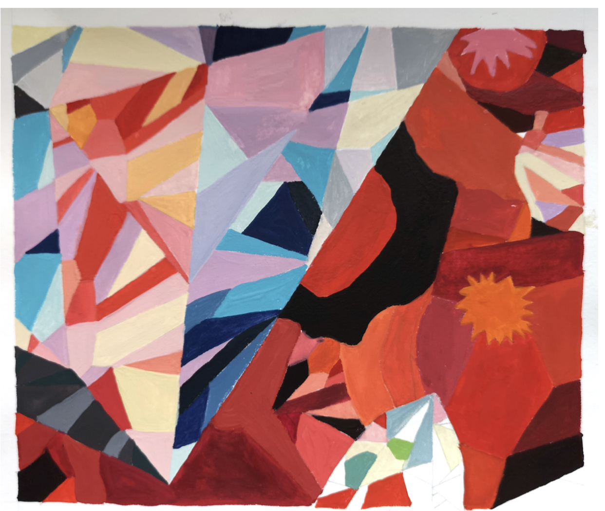
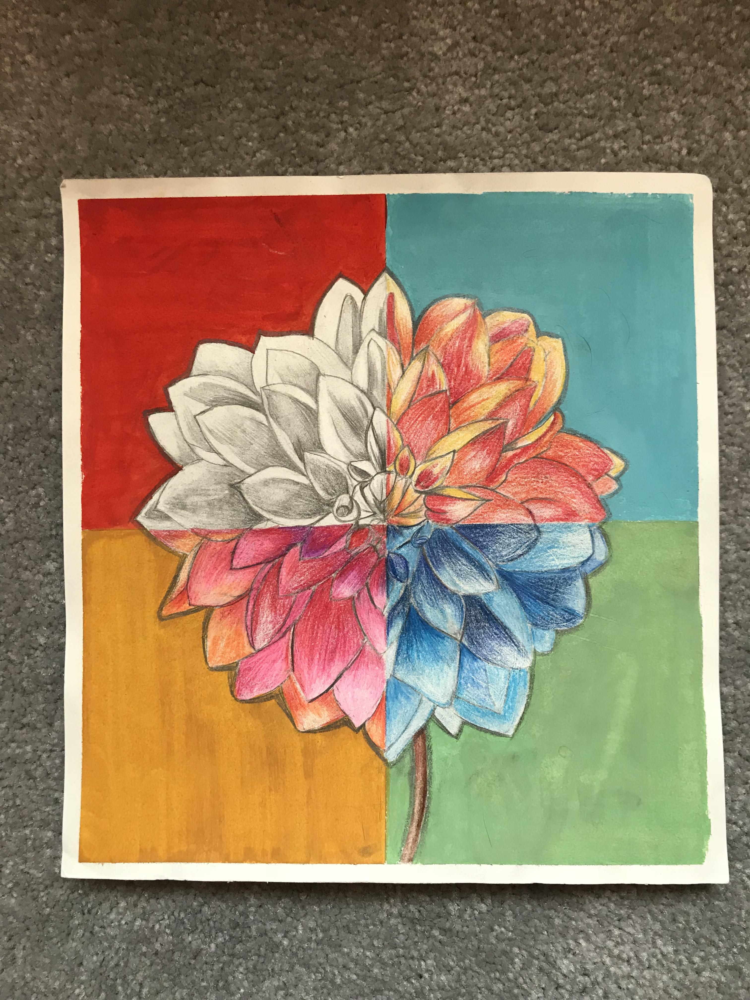
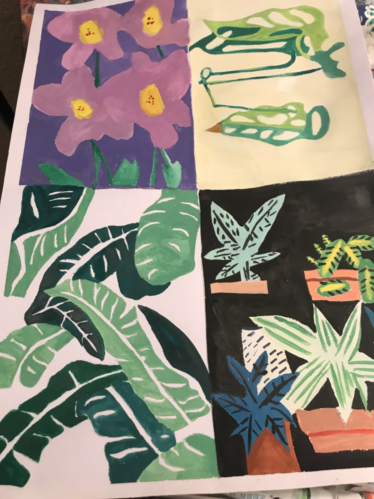
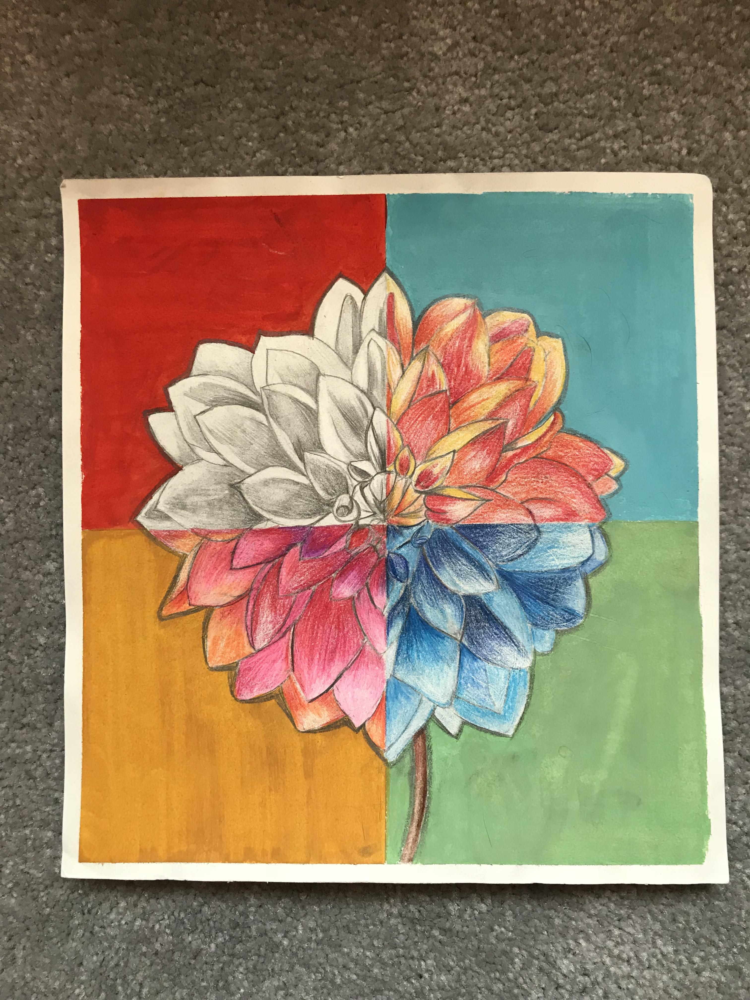
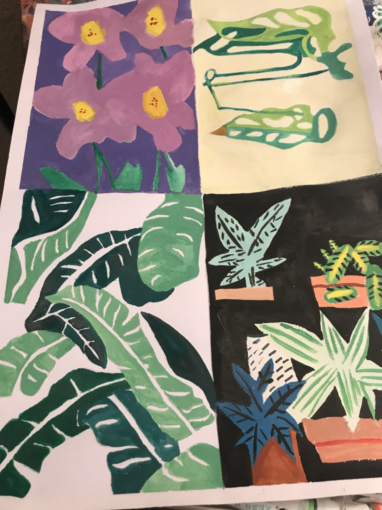

Drawings 1
They are the 3 drawings that I drew last year, the first one I used Micron Pen to paint butterflies detaily. The second one I used watercolor to drew lots of different geometry patterns, the third one I Made a replica of a pomegranate with colorpencil .
 
 


